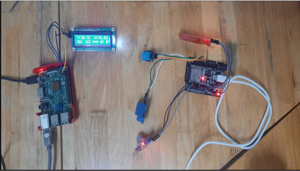

Hệ thống giám sát môi trường IoT
Ứng dụng ESP32, cảm biến khí và nền tảng Raspberry Pi
Mục tiêu đề tài
Thiết kế và triển khai một hệ thống giám sát môi trường thông minh có khả năng thu thập dữ liệu từ nhiều loại cảm biến (nhiệt độ, độ ẩm, khí độc, mức nước), hiển thị tức thời trên LCD và gửi dữ liệu về máy chủ để lưu trữ và truy cập từ xa qua giao diện web.
Thành phần hệ thống
- Thiết bị đầu cuối: ESP32 với cảm biến DHT11, MQ135, cảm biến mức nước
- Thiết bị hiển thị: LCD1602 I2C
- Máy chủ: Raspberry Pi dùng SQLite & Mongoose
- Giao diện người dùng: HTML, CSS, JS, AJAX
Cơ chế hoạt động
Hệ thống phối hợp phần cứng & phần mềm như sau:
- ESP32 thu thập dữ liệu cảm biến → gửi HTTP POST
- Raspberry Pi nhận dữ liệu qua Mongoose → lưu vào SQLite
- LCD1602 hiển thị dữ liệu mới nhất tại chỗ
- Web truy cập từ xa, dùng AJAX cập nhật dữ liệu theo thời gian thực
- Điều khiển từ xa: gửi truy vấn /control để bật/tắt thiết bị
Kết quả đạt được
- Truyền dữ liệu ổn định, phản hồi < 1 giây
- Giao diện thân thiện, dễ thao tác
- Có thể mở rộng thêm nhiều loại cảm biến
Hình ảnh minh hoạ
Mạch thực tế:
Giao diện web realtime:
Video kết quả
Cập nhật lần cuối:
Link GitHub: Xem tại đây